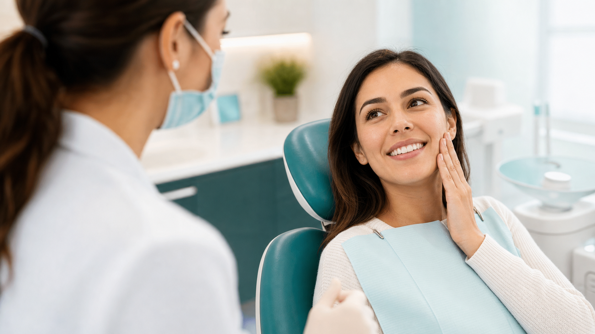

Clareamento dental
Opções seguras para deixar o sorriso mais claro com acompanhamento profissional.
Saiba mais sobre clareamento em ItaqueraAtendimento para prevenção, estética, dor de dente e reabilitação oral em um só lugar. A LaCari Odontologia fica perto de quem mora ou trabalha em Itaquera e região da Zona Leste.
Da consulta de rotina aos tratamentos estéticos, você encontra orientação clara e um plano pensado para o seu caso.
Opções seguras para deixar o sorriso mais claro com acompanhamento profissional.
Saiba mais sobre clareamento em Itaquera
Correção do alinhamento dos dentes e da mordida com planejamento individual.
Saiba mais sobre aparelho em Itaquera
Cuidado para aliviar a dor, tratar infecções e preservar dentes sempre que possível.
Saiba mais sobre canal em Itaquera
Melhora de cor, formato e proporção dos dentes com resultado natural.
Reabilitação para quem perdeu um ou mais dentes e quer voltar a mastigar com confiança.
Saiba mais sobre implante em ItaqueraSoluções personalizadas para recuperar função, conforto e estética.
Limpezas, restaurações e prevenção para manter sua saúde bucal em dia.
Conteúdos educativos ajudam pacientes de Itaquera a entender sinais de alerta, opções de tratamento e quando agendar uma avaliação odontológica.
Clareamento dói? Quanto dura um implante? Como saber se preciso de canal? Veja respostas no blog.
O tratamento começa com escuta. Antes de indicar qualquer procedimento, a equipe entende sua queixa, suas expectativas e o que cabe na sua rotina.
Você entende o diagnóstico, as prioridades e as etapas do tratamento.
Urgência, saúde e estética são organizadas para facilitar sua decisão.
Agendamento e dúvidas pelo WhatsApp para tornar o cuidado mais simples.
Estar perto faz diferença quando o tratamento exige retorno, manutenção ou acompanhamento. A LaCari fica em uma região conhecida da Zona Leste, com acesso prático para pacientes do entorno.
Acompanhe os conteúdos públicos do perfil oficial da clínica, com dicas e novidades para cuidar melhor do seu sorriso.
Abrir @clinicalacariConte o que você precisa e receba orientação para marcar sua avaliação.